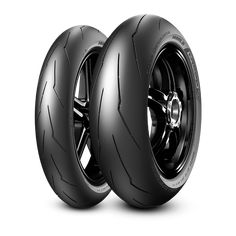
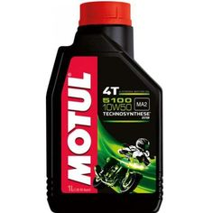
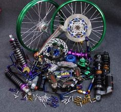
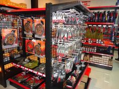

Produk Kami
Kami menyediakan berbagai macam onderdil motor, mulai dari ban, oli, hingga aksesoris motor lainnya.
-

Ban Motor
Ban motor berkualitas tinggi untuk berbagai jenis motor. Tersedia dalam berbagai ukuran dan merek.
-

Oli Mesin
Oli mesin terbaik untuk menjaga performa mesin motor Anda tetap optimal. Tersedia dalam berbagai varian.
-

Aksesoris Motor
Berbagai aksesoris motor untuk mempercantik dan meningkatkan kenyamanan berkendara Anda.
-

Sparepart Mesin
Sparepart mesin berkualitas untuk berbagai jenis motor. Tersedia dalam berbagai merek dan tipe.